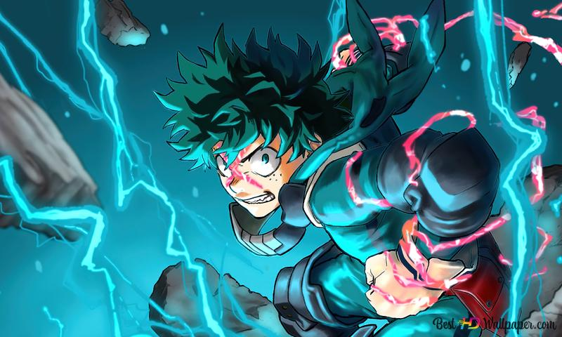

Appereance
Izuku is a teenage boy with green eyes and messy dark green hair, many people believe his hair might be black, but the messiness casts a shadow on his own hair. During his time at Junior High School, he wore a black gakuran uniform with yellow buttons. At UA, he wears the standard male uniform: a light grey suit over a white dress shirt and dark green dress pants, along with a red necktie. Izuku usually wears his signature, oversized red boots. Though he was initially very skinny, Izuku has gained toned muscles after his ten months of extensive training with All Might, and as the series progresses, these are shown to become more developed and defined as he gradually grows stronger. After using too much of One for All, Izuku has scars all over his right arm.
"A Hero's Job Is To Risk His Life To Turn His Promises Into Reality."
Biodate
- Age : 16
- Birthday : July 15
- Height : 166 cm
- Affiliate : U.A.
- Quirk : One For All
Midoriya Friend's
Midoriya-Izuku has Friends in class A. There are :